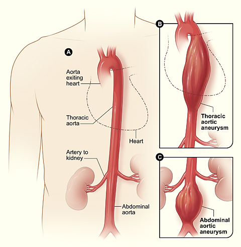
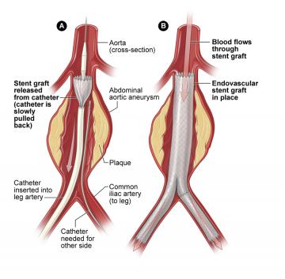
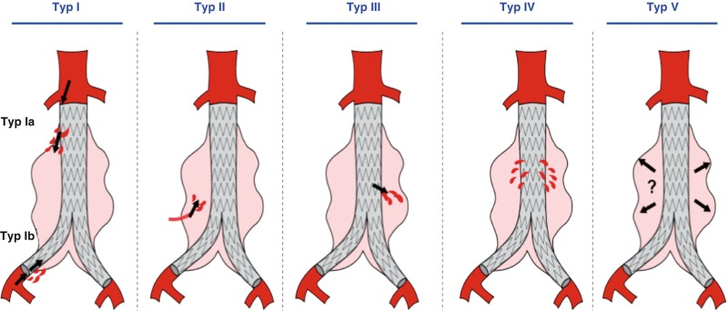

1. 「腹部大動脈瘤」ってどんな病気?
大動脈(だいどうみゃく)は、心臓から送り出された血液が最初に通る、体でいちばん太い血管です。胸からおなかへと1本の管のように下りていきます。
この大動脈の おなかの部分の壁が弱くなり、風船のようにふくらんでしまった状態 が 「腹部大動脈瘤(ふくぶ だいどうみゃくりゅう)」です。ふくらんだ部分を「こぶ(瘤)」と呼びます。

心臓から胸、おなかを通って両脚へ血液を送ります。
胸の中の大動脈がふくらんだ状態です。
腎臓へ向かう血管より下で、大動脈がこぶ状にふくらんでいます。
出典：National Institutes of Health (NIH), Wikimedia Commons「Aortic aneurysm.jpg」。米国連邦政府の著作物としてパブリックドメイン。
{kind=link}
2. なぜ治療した方がよいの?
こぶ自体は痛くありませんが、大きくなると壁がさらにうすくなり、ある日突然「破裂(はれつ)」してしまうことがあります。破裂すると、おなかの中で大出血が起こり、命に関わるとても危険な状態になります。
治療を考える目安
一般的には、こぶの大きさ(直径)が およそ 5cm(50mm) を超えるあたりから、治療が検討されます。ただし、これはあくまで目安です。
- こぶが大きくなるスピードが速いとき
- こぶの形がいびつなとき
- おなかや腰に痛みが出てきたとき(破裂の前ぶれのことがあります)
などは、大きさが目安より小さくても治療をすすめられることがあります。年齢・体力・ほかの病気なども合わせて、担当の医師が総合的に判断します。
3. 治療は大きく2つの方法があります
腹部大動脈瘤の治療には、大きく分けて 「開腹手術(かいふく しゅじゅつ)」 と、このページで説明する 「ステントグラフト内挿術(EVAR)」 の2つがあります。
🔪 開腹手術(人工血管置換術)
- おなかを大きく切り開いて、こぶの部分を 人工血管に取りかえる方法。
- 歴史が長く、治療としては確実で、その後の追加治療が少なめ。
- 体への負担は大きく、入院・回復に時間がかかる。
- 若くて体力のある方や、EVARに向かない形のこぶに向く。
🩹 ステントグラフト内挿術(EVAR)
- おなかを大きく切らず、足の付け根の血管から器具を入れて、血管の内側から治す方法。
- 傷が小さく体の負担が軽い。入院が短く、回復が早い。
- ご高齢の方や、持病のある方にも行いやすい。
- その代わり、退院後も定期的な検査がずっと必要。
4. EVAR(ステントグラフト内挿術)とは
EVAR(イーバー)は英語の頭文字で、「血管の内側から動脈瘤を治す治療」という意味です。使う器具を 「ステントグラフト」 といいます。
ステントグラフトってどんなもの?
ステントグラフトは、金属のバネ(ステント)と じょうぶな布の筒(グラフト=人工血管)を組み合わせた器具です。ふだんは細くたたんで筒(カテーテル)の中に収めておき、こぶの位置まで運んでから、その場で パッと広げて血管の内側に張りつけて固定します。
画面をタップして、EVARの流れを見てみましょう

足の付け根からカテーテルを入れ、たたまれたステントグラフトを動脈瘤まで進めます。
血液はステントグラフトの中を流れ、こぶには血圧が直接かかりにくくなります。
出典：National Heart, Lung, and Blood Institute (NHLBI / NIH), Aortic Aneurysm — Treatment「Illustration of aortic aneurysm repair」。NIHの著作権FAQに基づきパブリックドメインとして利用（無改変、出典明記）。
5. 手術当日の流れ
手術のやり方は施設や患者さんの状態によって異なりますが、一般的にはこのような流れです。
- 麻酔をかけます ― 全身麻酔、または下半身の麻酔(腰の麻酔)などで、痛みを感じないようにします。
- 足の付け根を準備します ― 左右の太ももの付け根を、数cm切開する、または針を刺すだけ(体にやさしい方法)で血管に入り口を作ります。
- 筒(カテーテル)を通します ― レントゲン(透視)で位置を確認しながら、血管の中を通してこぶの位置まで、たたんだステントグラフトを運びます。
- ステントグラフトを広げます ― こぶの中でパッと広げ、上と下の健康な血管にしっかり固定します。
- 位置と漏れを確認します ― 造影剤を流して、きちんと固定され、すき間から血が漏れていないかを確認します。
- 入り口を閉じて終了です ― 足の付け根を縫合、または圧迫して止血します。手術時間はおおよそ1〜3時間ほどが目安です。
6. 入院と回復について
🛏️ 入院期間
数日〜1週間程度が目安。開腹手術より短いことが多いです(状態により異なります)。
🚶 体の回復
手術の翌日〜数日で歩く練習を始められることが多く、日常生活への復帰も比較的早めです。
💊 痛み
傷が小さいため、開腹手術に比べると痛みは軽めのことが多いです。痛み止めで調整します。
🏠 退院後
重い物を持つ・激しい運動は少しの間ひかえます。いつから何をしてよいかは担当医の指示に従いましょう。
7. 退院後の生活 ― 定期検査がとても大切です
EVAR は体にやさしい治療ですが、「治療して終わり」ではなく、退院後も定期的な検査(多くはCT検査)をずっと続けることがとても重要です。これは EVAR のいちばん大事なポイントです。
なぜ定期検査が必要なの?
まれに、時間がたつと ステントグラフトの端や継ぎ目、枝分かれした血管などから、こぶの中へ血液が入り続けることがあります。これを 「エンドリーク」と呼びます。血液の入り方によって5つの型に分けられ、こぶが再び大きくなることもあります。

退院後に気をつけたいこと
- 定期検査を欠かさない(いちばん大切)
- 血圧をよくコントロールする ― 高い血圧はこぶや血管の負担になります
- 禁煙する ― 喫煙は動脈瘤の大敵です
- 急なおなか・背中・腰の強い痛みを感じたら、すぐに受診・救急連絡を
8. EVARが「向く人」「向きにくい人」
EVAR は誰にでもできるわけではなく、こぶの形や血管の状態が、ステントグラフトを安全に固定できる条件を満たしているかが大切です。CT検査でくわしく調べて判断します。
| EVARが向きやすい | 開腹手術が向きやすいことも | |
|---|---|---|
| 体の状態 | ご高齢、持病があり大きな手術が負担な方 | 若く体力があり、長期の確実性を優先する方 |
| こぶの形 | 筒を固定する「のりしろ」(健康な血管)が十分にある | のりしろが短い・曲がりが強い・枝分かれにかかる |
| 足の血管 | 器具を通せる太さ・性状がある | 細い・曲がり・石灰化が強い |
9. よくある質問(FAQ)
手術の傷あとは大きく残りますか?
どのくらい入院しますか?
手術のあと、ふつうの生活に戻れますか?
なぜ退院後もCT検査を続けるのですか?
ステントグラフトは一生もちますか?
また手術(追加の治療)が必要になることはありますか?
MRI検査や、空港の金属探知機は大丈夫ですか?
家族が気をつけてあげられることは?
10. やさしい確認クイズ(全4問)
読んだ内容のおさらいです。気軽に挑戦してみてください。
11. 用語集(やさしい言葉で)
| 言葉 | やさしい意味 |
|---|---|
| 大動脈(だいどうみゃく) | 心臓から出た血液が最初に通る、体でいちばん太い血管 |
| 腹部大動脈瘤(りゅう) | おなかの大動脈の壁がふくらんで「こぶ」になった状態 |
| 破裂(はれつ) | こぶが破れて大出血すること。命に関わる危険な状態 |
| EVAR(イーバー) | 血管の内側からこぶを治すステントグラフト治療 |
| ステントグラフト | 金属のバネ + じょうぶな布の筒でできた、血管の内張りの器具 |
| カテーテル | 血管の中を通す細い管。器具を運ぶのに使う |
| 開腹手術 | おなかを切り開いて、こぶを人工血管に取りかえる手術 |
| エンドリーク | ステントグラフトのすき間から、こぶの中へ血液がもれること |
| 経過観察(けいかかんさつ) | すぐ治療せず、検査でこぶの大きさを定期的に見守ること |
| 造影剤(ぞうえいざい) | 血管や血の流れをレントゲン・CTで見やすくする薬 |